Montréal, Canada
Advancing quantum science across information, matter, light, and technology.
About us
The McGill Quantum Centre brings together researchers across disciplines to advance our understanding and control of quantum systems, and to explore the new scientific and technological possibilities they enable.
Our research spans quantum information and computation, collective phenomena in quantum matter, quantum optics and photonics, measurement and control, and the development of new quantum platforms and technologies. Across these areas, we connect fundamental theory with experiment and bring together ideas, methods, and physical systems that are often separated by traditional disciplinary boundaries.
The Centre serves as a common intellectual home for quantum research at McGill. We foster collaboration across departments and research groups, support interdisciplinary training, develop shared scientific activities and infrastructure, and build connections with the broader quantum community in Quebec, Canada, and internationally.
Research Axes
These research axes are intentionally interconnected rather than separate silos.
Many of the most exciting problems in quantum science lie at their intersections: quantum-information concepts can reveal new ways to understand matter and measurement; photonic and atomic systems can provide platforms for computation and simulation; advances in materials and devices can enable new forms of control and sensing; and experimental challenges can motivate new theoretical questions.
The McGill Quantum Centre creates a setting in which these connections can develop across disciplines, physical platforms, and scales—from fundamental principles to experimentally realized quantum systems and emerging technologies.
Faculty
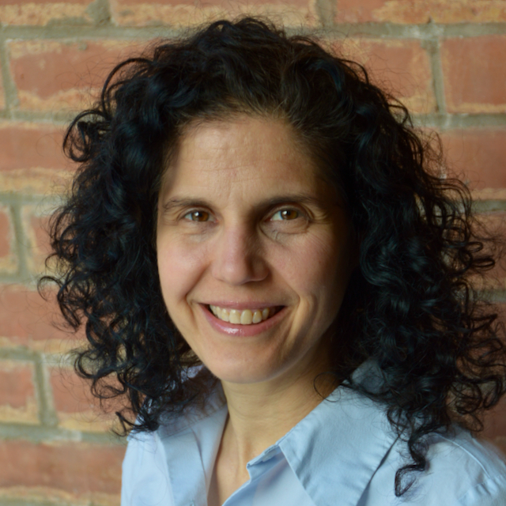
Quantum Information & Computation · Quantum Matter & Many-Body Physics
Prof. Pereg-Barnea's theory group is interested in questions of topology in quantum systems, both in quantum materials and in analogue bosonic systems. They study equilibrium and driven systems of non-interacting and interacting particles. Her group is often inspired by experiments or propose experimental tests for our theories.
Academic Website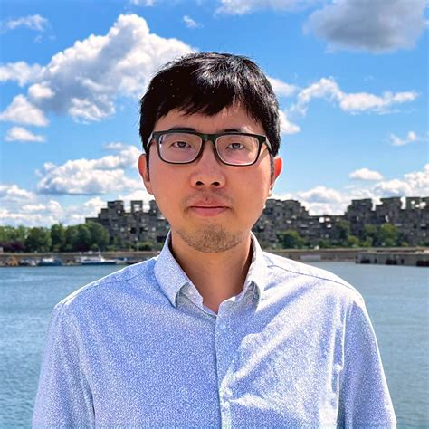
Quantum Information & Computation · Quantum Matter & Many-Body Physics · Quantum Optics, Photonics & Measurement
The Kai Wang Lab develops information-driven quantum photonics, asking how optical systems can be engineered to maximize what can be learned from physical measurements. Its research spans quantum sensing, emulation of topological and non-Hermitian matter, and programmable architectures built from structured quantum light, metasurfaces, and integrated photonics. Across these efforts, the lab harnesses the versatility and controllability of light to recreate complex dynamics and enable new approaches to metrology and information processing.
Academic WebsiteQuantum Matter & Many-Body Physics · Quantum Platforms & Technologies
Prof. Bevan's investigates electron transfer and quantum properties in nanoscale materials and energy systems, with a focus on quantum defect centres and atomically engineered electronic materials. His group develops computational methods to understand and design next-generation technologies for energy storage, quantum computing, and sensing.
Academic Website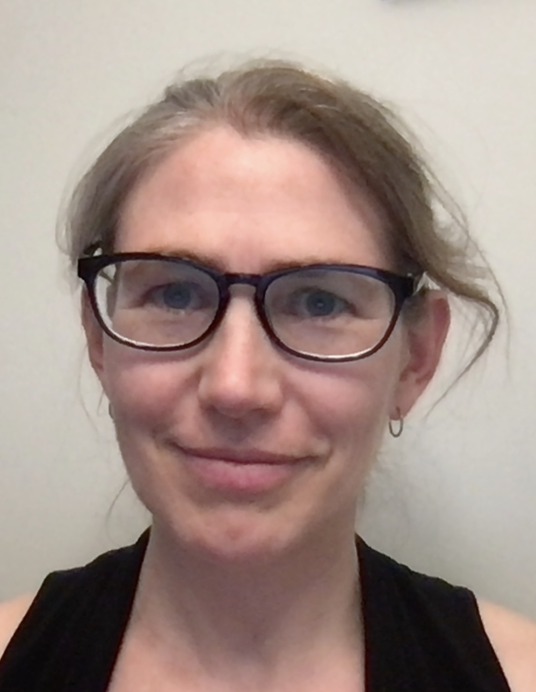
Quantum Optics, Photonics & Measurement · Quantum Platforms & Technologies
Prof. Childress' research applies concepts of quantum optics and atomic physics to solid-state systems. Using electronic and nuclear spins in diamond as well as optical micro-cavities, her group develops explores applications in quantum networking and quantum sensing.
Academic Website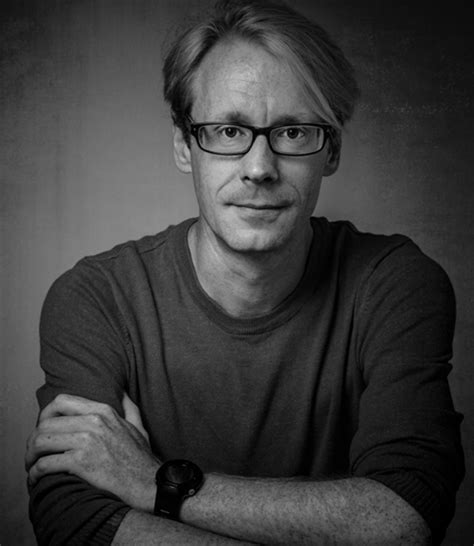
Quantum Information & Computation · Quantum Matter & Many-Body Physics · Quantum Optics, Photonics & Measurement · Quantum Platforms & Technologies
Prof. Coish's group studies quantum condensed matter theory, with a focus on materials and nanoscale devices, quantum dynamics, and quantum control. Specific areas of interest include nanoscale semiconductor devices (quantum dots, wires, and wells), quantum and classical photonics, nanoscale magnetism, hyperfine interactions, quantum measurements and readout, practical quantum error correction, and open quantum systems.
Academic Website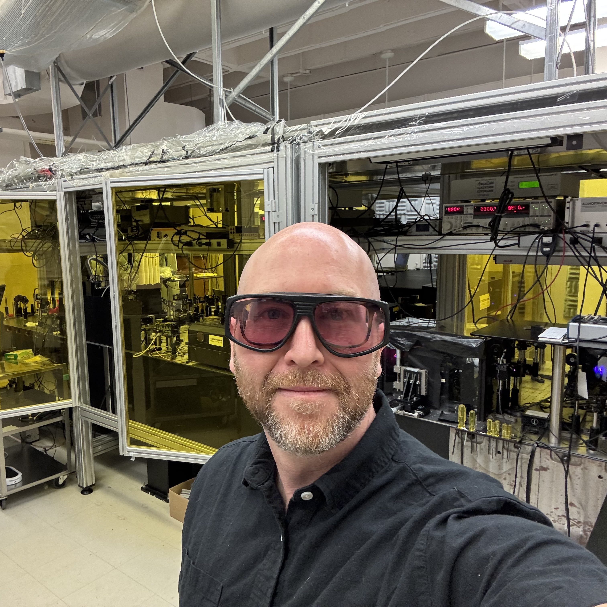
Quantum Matter & Many-Body Physics
Prof. Cooke's lab uses ultrafast terahertz spectroscopy to investigate the dynamics of quantum matter. Topics include photoinduced phase transitions triggered by optical excitation, electron-phonon or phonon-phonon coupling in strongly correlated materials seen by nonlinear 2D THz spectroscopy. The group is also developing a new form of ultrafast electron microscopy driven by extreme THz fields in metal nanotips in the joint Quantum Dynamics Laboratory.
Academic Website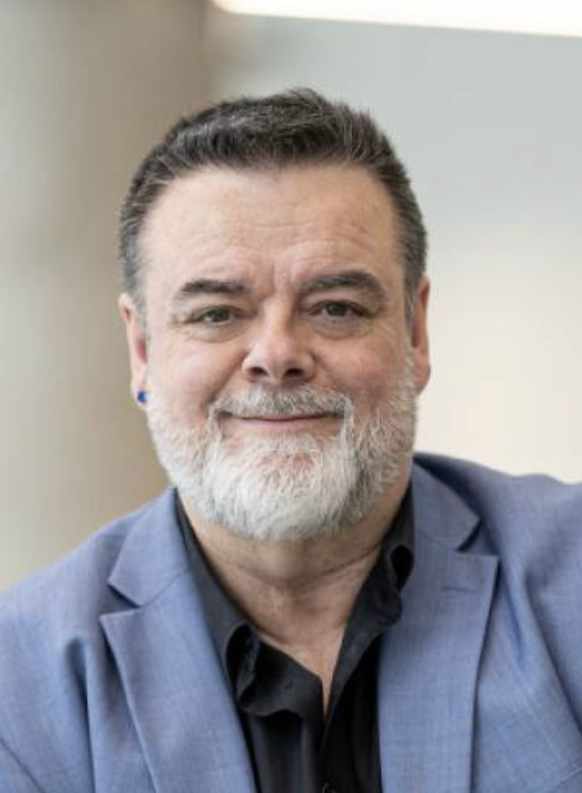
Quantum Information & Computation · Quantum Optics, Photonics & Measurement
Prof. Crépeau's research involves developing secure cryptographic protocols using quantum information, with a focus on quantum cryptography, quantum communication, and secure multiparty quantum computation.
Academic Website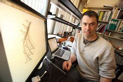
Quantum Sensing · Cosmic Microwave Background · Astroparticle Physics · Instrumentation
Prof. Dobbs holds a Canada Research Chair and is a Senior Fellow of CIFAR. His group builds novel superconducting quantum sensing instruments for cosmology, including detectors deployed at the South Pole and on stratospheric balloons to probe the cosmic microwave background.
Academic Website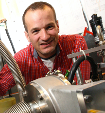
Quantum Information & Computation · Quantum Matter & Many-Body Physics · Quantum Platforms & Technologies
Prof. Gevais' group searches for new quantum phases of matter on-a-chip and explores novel low-temperature quantum systems, with a focus on topological states and their potential applications in quantum computing.
Academic Website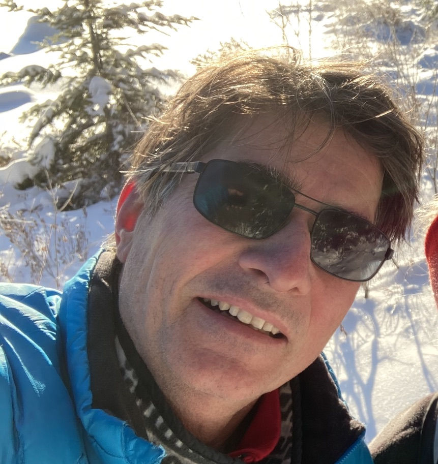
Quantum Information & Computation · Quantum Optics, Photonics & Measurement · Quantum Platforms & Technologies
Prof. Grutter's group is interested in understanding the properties of engineered structures suitable for quantum sciences such as atomically defined qubits in Si, single photon emission from atomic defects in 2D materials and quantized electron charge transfer properties of enzymes. To achieve this, the group invents, designs, builds, and modifies atomic force microscopes and related instruments that allow them to detect signals from single charges with nanometer spatial and 10fs time resolution, allowing them to determine how defects and traps affect quantum properties.
Academic Website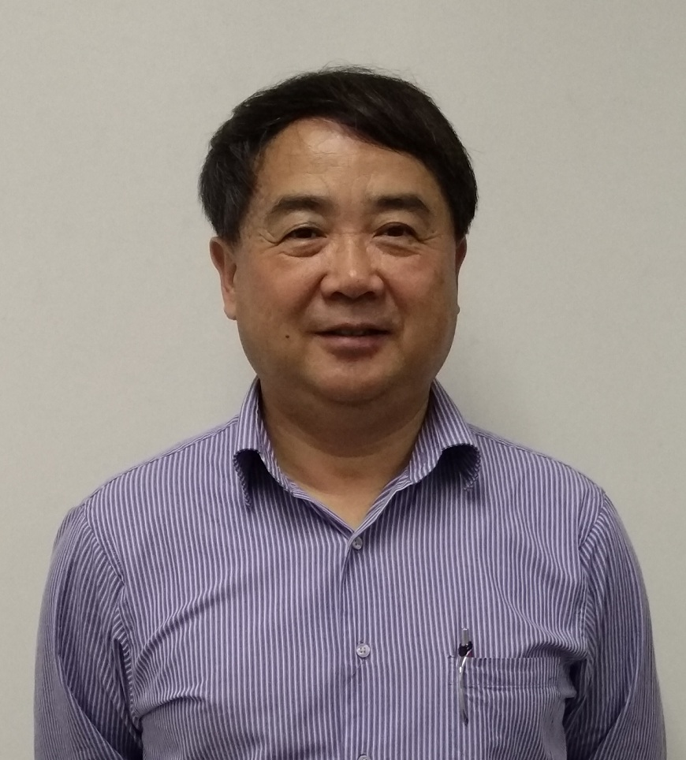
Quantum Matter & Many-Body Physics · Quantum Platforms & Technologies
Prof. Guo’s group focuses on first-principles modeling of quantum transport, technology computer-aided design (TCAD) of quantum hardware, and AI-assisted materials science.
Academic Website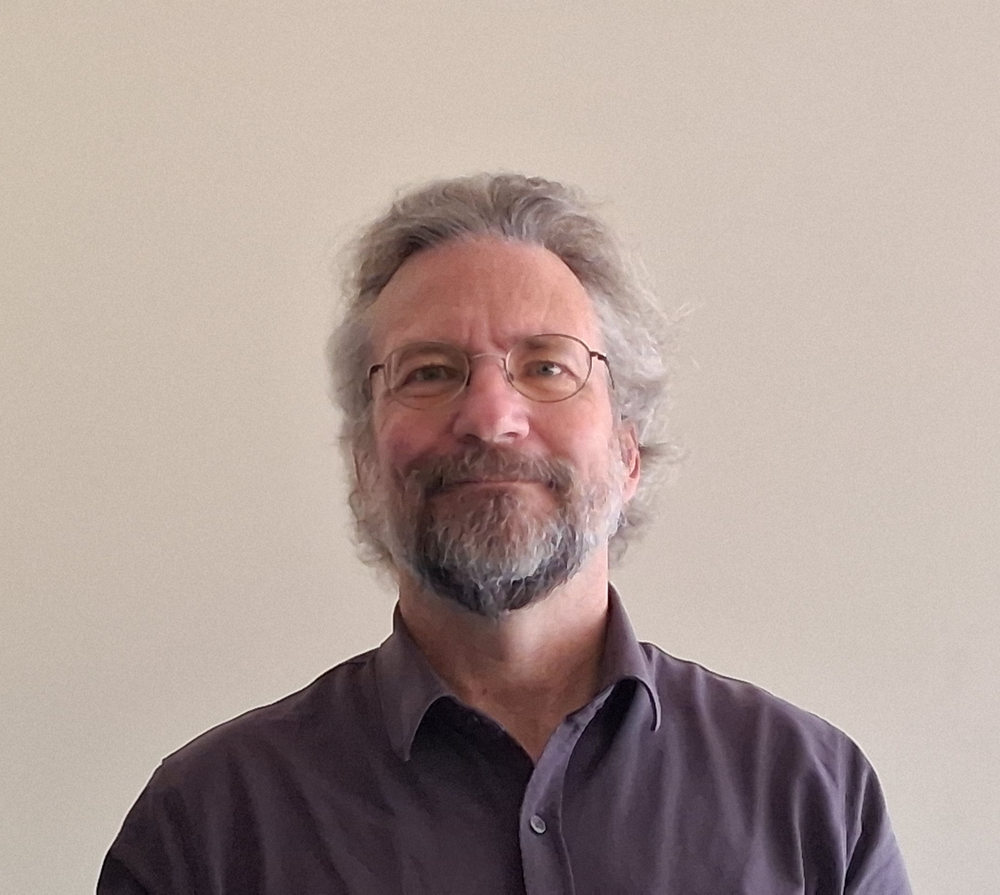
Quantum Information & Computation · Quantum Matter & Many-Body Physics · Quantum Optics, Photonics & Measurement · Quantum Platforms & Technologies
Prof. Hilke's research is dedicated to discovering and understanding low-dimensional materials and emergent quantum phenomena for the next generation of quantum technologies. His group investigates how electrons, phonons, disorder, and topology interact in reduced dimensions, from ultrahigh-mobility two-dimensional electron gases to moiré graphene. A central goal is to harness unconventional quantum and thermal transport at the nanoscale through materials engineering, spectroscopy, and advanced electronic transport measurements.
Academic Website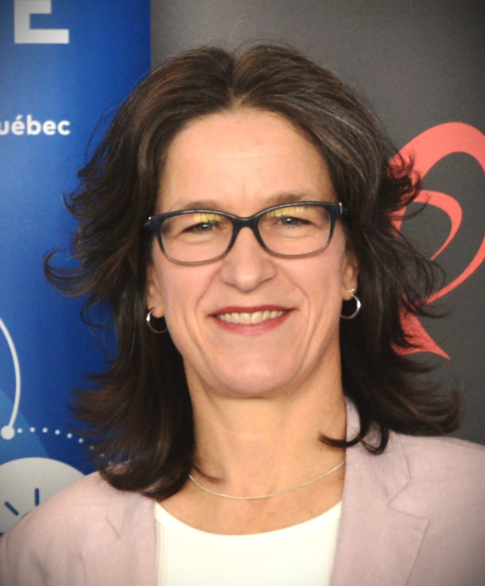
Quantum Information & Computation · Quantum Optics, Photonics & Measurement · Quantum Platforms & Technologies
Prof. Liboiron-Ladouceur'sresearch focuses on integrated photonic systems for classical and quantum information processing, with particular emphasis on silicon photonics, programmable optical processors, and transverse-mode encoding. The group develops scalable photonic circuits and AI-driven design methodologies for quantum computing, communications, and photonic information processing.
Academic Website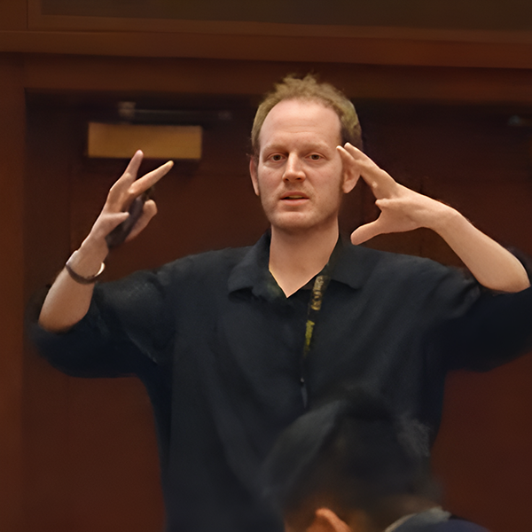
Quantum Information & Computation · Quantum Matter & Many-Body Physics · Quantum Optics, Photonics & Measurement · Quantum Platforms & Technologies
Prof. Sankey's group uses light to sense and control the motion of ultralow-noise mechanical systems, pursuing the ultimate sensitivity limits imposed by quantum mechanics. Using membrane resonators, they aim to generate quantum states of light useful to gravitational wave interferometers and study new ways to optically control motion. Using acoustic modes of superfluid helium, the group can search for dark matter. Prof. Sankey also applies sensitive quantum optics tools to solve outstanding problems in cancer radiation therapy, notably developing a new kind of dosimeter that behaves radiologically like human tissue.
Academic Website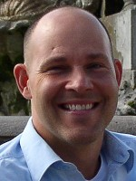
Quantum Matter & Many-Body Physics · Quantum Optics, Photonics & Measurement · Quantum Platforms & Technologies
Prof. Siwick's group investigates the emergent properties and nonequilibrium dynamics of quantum materials, with a focus on understanding how their atomic and electronic structures evolve. They develop and apply ultrafast electron scattering, imaging, and spectroscopy techniques to probe these dynamics on femtosecond timescales.
Academic Website* Profile photos are being collected. Please contact us to provide updated headshots for any missing members.
Students
The McGill Quantum Centre is committed to providing students with opportunities to develop their skills, connect with the quantum community, and prepare for careers at the forefront of quantum science and technology.
Events
Stay informed about upcoming MQC seminars, conferences, networking events, student workshops, and outreach activities.
Our first MQC conference will be held in October 2026. Stay tuned for more information!